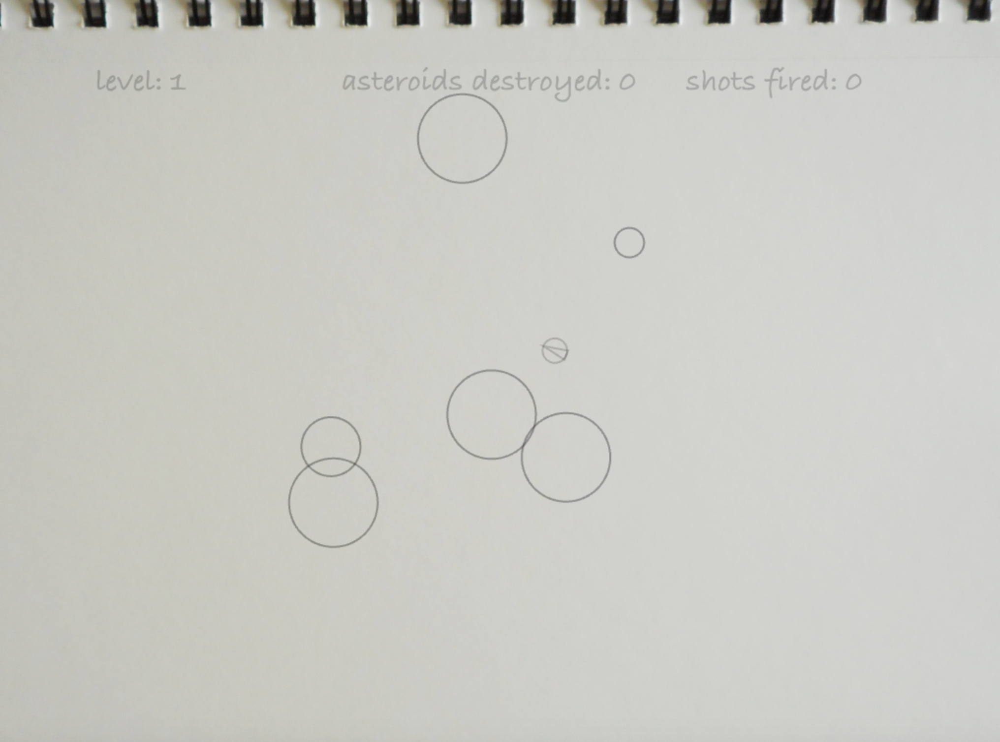

Asteroids
This was an assignment that I did using Processing. The goal was to make a game that was modeled after the classic game Asteroids and made use of collision detection. I kept the basic game largely intact. The player controls the ship and avoids the asteroids. They can fire bullets which destroy the asteroids or break them into smaller pieces. Destroying all of the asteroids brings you to the next level, which has more asteroids to destroy.
For the design, I decided to go for a sketchbook look. The idea of shooting asteroids is kind of like a daydream, and I wanted the design to give the feeling of someone absentmindedly doodling while imagining that.
I tried to keep the UI minimal, as I didn't want to distract from the gameplay or the visuals. I only included 3 values: the current level, the number of asteroids destroyed, and the number of shots fired. I chose these values because I felt like they gave the player a sense of progression and accomplishment. "How long have I been playing?" "Long enough to destroy 300 asteroids!" "Am I getting better?" "I made it to level 5 this time!" Furthermore, shots fired and Asteroids destoyed could be combined to give a rough estimate of the player's skill.
 back to projects